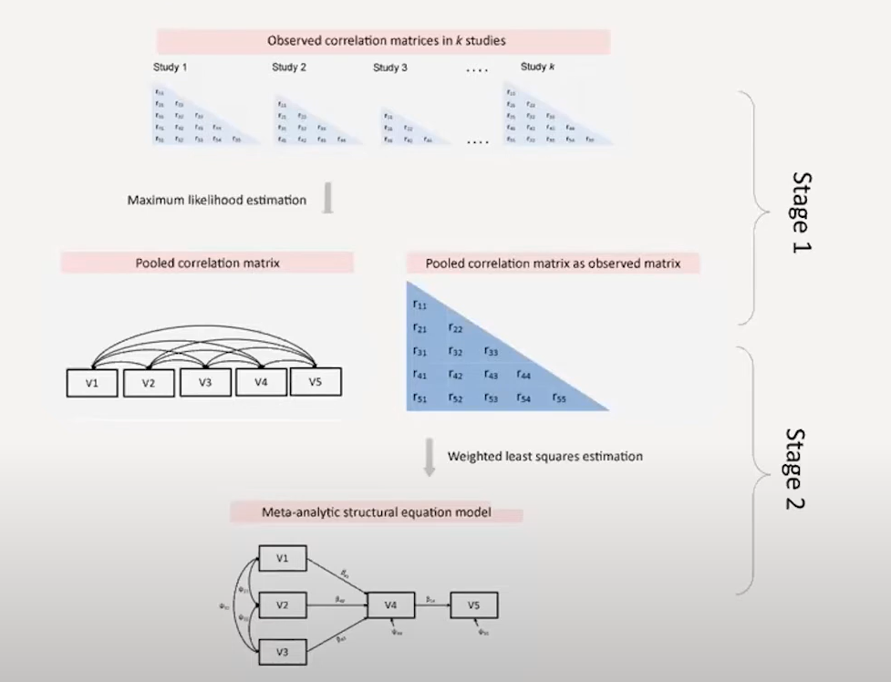
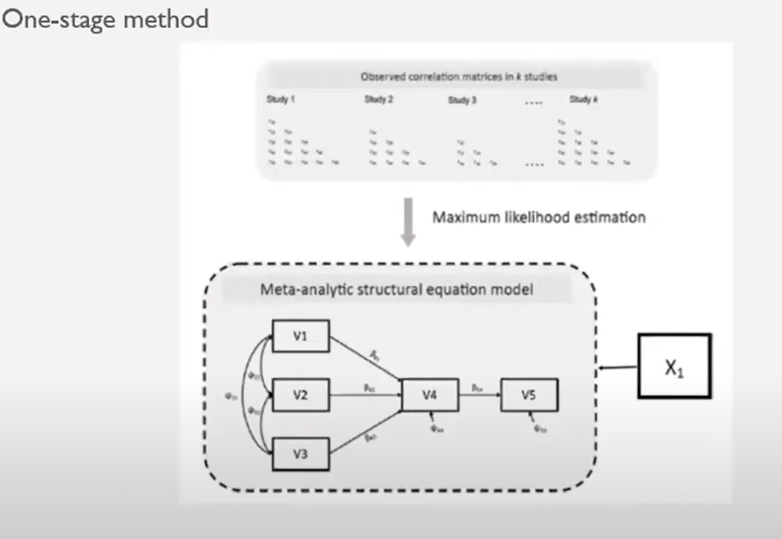
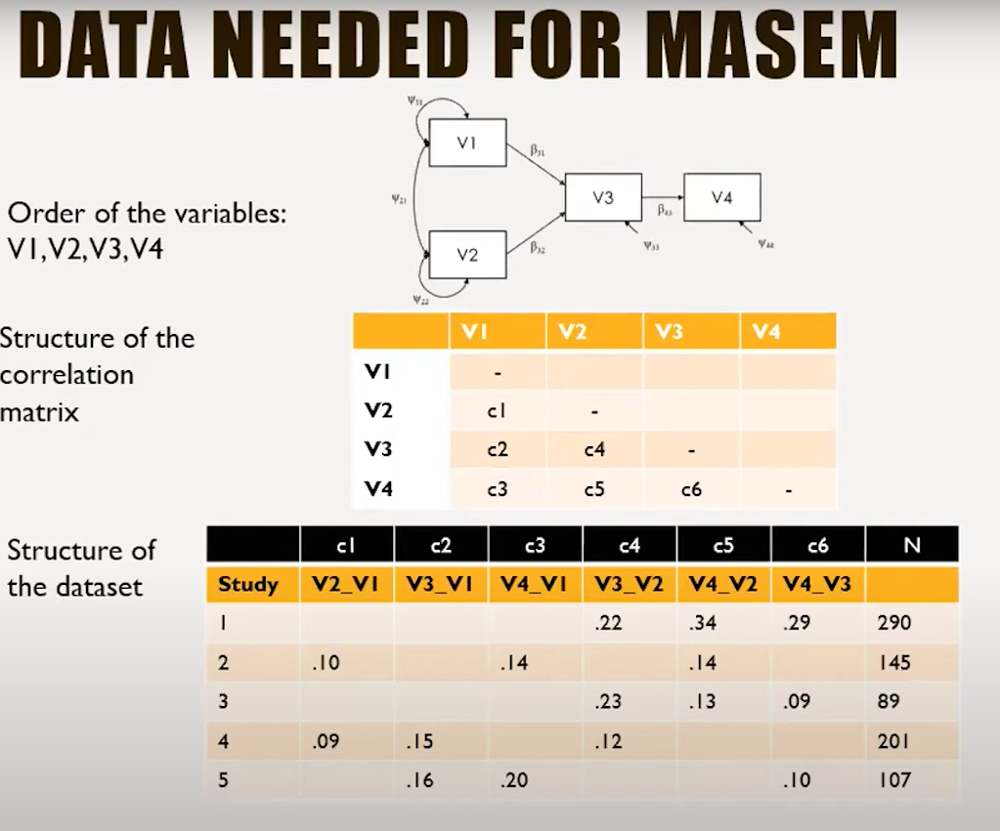

6 Meta-Analysis Structural Equation Modeling
Readings
Fixed-effects MASEM (Mike W. L. Cheung and Chan 2009)
Fixed and random-effects MASEM (M. W.-L. Cheung 2013)
Random-effect MASEM (M. W.-L. Cheung and Cheung 2016)
Health psychology application (M. W.-L. Cheung and Hong 2017)
Review (M. W.-L. Cheung 2018)
Forum to get help
Notes:
SEM is also known as covariance structural analysis, covariance structure model, analysis of covariance structures, analysis of correlation structure
MASEM is also known as meta-analytic path analysis, meta-analysis of factor analysis, meta-analytically structural euqaiton analysis, path analysis of meta-analytically derived correlation matrices, SEM of a meta-analytic correlation matrix, path analysis based on meta-analytic findings, model-based meta-analysis
Advantages of MASEM (Bergh et al. 2016)
Can test intermediate mechanisms and opposing hypotheses.
Increase external validity.
Disadvantages of MASEM
Not useful in cases where no competing hypotheses or
Cannot be performed with limited primary studies (40 studies minimum)
Number of variables should not be too large
Is not immune to construct validity threats.
Can be misleading when imputation is in great proportion
Limited use of moderation analysis within SEM
-
cannot make causal inferences (except when all primary data are from experimental designs)
-
One can only do her best to address endogeneity concerns
use lagged term for autocorrelation
adjust for measurement error
Include as many relevant controls as possible
test alternative specification.
-
Two-stage method

(image by Dr. Suzanne Jak)

(image by Dr. Suzanne Jak)
Steps to do MASEM (Bergh et al. 2016, 480):
Step 1: Specify conceptual models:
- Specify competing models o be tested
- Specify whether the models are a priori or post hoc
Step 2: Meta-analytic procedures:
- Solutions to missing data (recommend the first three)
Search again (based on the same or different search criteria.
Contact authors to request correlation values (Shadish 1996)
Replicate the primary study
Use surrogate or proxy variables that are conceptually similar (Eby et al. 1999)
Use composite correlations by combining specific constructs into broader ones (Viswesvaran and Ones 1995)
Use a two-stage SEM (Mike W-L Cheung and Chan 2005; Fan et al. 2010)
Data imputation (e.g., full information maximum likelihood) (Mike W-L Cheung 2008)
Use the average effect size across nonmissing effect sizes (Viswesvaran and Ones 1995)
- Different pairs of variables can have different sample size values to calculate the meta-analytic correlations. Solutions:
Harmonic mean (Burke, Landis, and Murphy 2003): \(k/(1/N_1 + 1/N_2 + \dots + 1/N_k)\) where \(k\) is the number of correlations, and \(N_k\) refers to the sample used to calculate the \(k\)-th correlation. This is recommended because it limits the influence of very big numbers and increases the influence of smaller values and is usually smaller than the arithmetic mean (Landis 2013; Johnson et al. 2001)
The smallest total sample size (Roesch and Weiner 2001)
Median (Tokunaga and Rains 2010)
Arithmetic mean (Graham 2011; Judge et al. 2002)
- Derive meta-analytic matrix
Step 3: Structural equation modeling
- Approaches
-
Two-stage methods (Mike W-L Cheung and Chan 2005)
- can’t do moderation analysis really. (can only do subgroup analysis)
- Stage 1: Combine the correlation matrices into a pooled correlation matrix
- Stage 2: Fit SEM on the pooled correlation matrix
- Can use (1) Uni variate approach (Hunter and Schmidt 1990), (2) GLM (Becker 1992), (3) TSSEM (Mike W-L Cheung and Chan 2005)
-
One-stage methods (Jak and Cheung 2020)
Can do moderation analysis (for continuous moderator)
handles missing data similar to 2-stage
provides fit indices similar to two-stage
can use webMASEM to apply
-
Parameter-based MASEM (Becker and Wu 2007; Gnambs and Staufenbiel 2016)
Steps: Fit SEM, then pool the SEM parameters
need complete data, and model needs to fit equally well in all samples, but can be solved by Bayesian (Ke, Zhang, and Tong 2019)
-
- nonpositive definite matrix (i.e., 0 or negative eigenvalues) fix (either because of a small total number of studies in some cells, two variables are highly correlated, or overuse of imputation)
Choose alternative global starting values. (Eby et al. 1999)
Select precise starting values for parameter estimates (Eby et al. 1999)
Reduce the set of variables
- Reliability missing: can either use
Mean reliability (Kirca, Jayachandran, and Bearden 2005; Rosengren et al. 2020)
Use 0.8 as a conservative number for all constructs (Bergh et al. 2016; Aguinis et al. 2011)
- Sample dependencies fix:
-
(Geyskens, Steenkamp, and Kumar 2006) recommendations in steps:
Include all meaningful correlations from each sample for consideration
calculate composite correlation from conceptually similar component correlations from each sample
If different studies used totally or partially overlapping datasets, choose correlation(s) based on the bigger sample size(s).
use generalized least squares (Furlow and Beretvas 2005; Shadish 1996)
use random effect meta-analyses in conjunction with MASEM (Erez, Bloom, and Wells 1996)
use multilevel meta-analytic in conjunction with MASEM (Van den Noortgate and Onghena 2003)
-
- Use multiple fit measures (no general cutoff, all context-specific [Nye and Drasgow (2011))
-
Chi-square (careful because of its dependent on sample size): since MASEM can have a large number of observations, chi-square usually has poor fit even in cases where the empirical correlation matrix is quite close to the hypothesized model’s correlation matrix. (Aguinis and Harden 2009). Hence, use other fit indices as well.
Tests the null hypothesis of exact fit
If \(p < 0.05\), exact fit is rejected
Comparative fit index (CFI)
Goodness-of-fit index (GFI)
-
Root mean square residual (RMSR): measure of approximate fit
< .05 close approximate fit
.5 to .8 reasonable fit
>.1 poor fit (Browne and Cudeck 1992)
Standardized Root Mean Squared Residual (SRMSR)
-
- Inclusion and exclusion criteria (Bergh et al. 2016, 482):
Select the meta-analytic correlation for variables whose operationalizations are congruent with the a priori definitions of interest
Select meta-analytic correlation reported by meta-analyses that used prespecified meta-analytic methodologies (e.g., how unreliability was adjusted/corrected)
Utilize meta-analytic correlations derived from meta-analyses with the greatest sample sizes.
Step 4: Reporting procedures
- Follow the meta-analysis reporting standards (MARS)
- If the model only has observed variables, the procedure should be called path analysis rather than MASEM
- Include a table that has all estimated bivariate meta-analytic correlations and 95% CIs for each correlation, the number of studies for each correlation (k), and the total sample size (n)
- Include a table of results of each tested model with figures
- Include a table of coefficients (always standardized) and statistical significance level, SEs, 95% CIs.
Data

(image by Dr. Suzanne Jak)
6.1
metaSEM
library(metaSEM)
data("Roorda11")
my.df <- Cor2DataFrame(Roorda11$data, Roorda11$n)
## Add centered SES as a moderator (standardizing SES helps to improve the stability of the results)
my.df$data <- data.frame(my.df$data, SES=scale(Roorda11$SES), check.names=FALSE)
head(my.df$data)
#> neg_pos enga_pos achiev_pos enga_neg achiev_neg achiev_enga
#> 1 -0.54 NA 0.18 NA -0.29 NA
#> 2 NA 0.64 0.29 NA NA 0.23
#> 3 NA 0.29 NA NA NA NA
#> 4 NA 0.29 NA NA NA NA
#> 5 NA NA NA NA -0.24 NA
#> 6 NA 0.06 -0.09 NA NA 0.20
#> C(neg_pos neg_pos) C(enga_pos neg_pos) C(achiev_pos neg_pos)
#> 1 0.0005989503 -0.0001515535 -9.072888e-05
#> 2 0.0018375288 -0.0004649535 -2.783491e-04
#> 3 0.0063790635 -0.0016141079 -9.663017e-04
#> 4 0.0118882493 -0.0030081057 -1.800829e-03
#> 5 0.0043833791 -0.0011091346 -6.639929e-04
#> 6 0.0084368192 -0.0021347816 -1.278004e-03
#> C(enga_neg neg_pos) C(achiev_neg neg_pos) C(achiev_enga neg_pos)
#> 1 0.0001507643 3.883504e-05 -2.214649e-05
#> 2 0.0004625324 1.191428e-04 -6.794417e-05
#> 3 0.0016057006 4.136083e-04 -2.358707e-04
#> 4 0.0029924455 7.708180e-04 -4.395732e-04
#> 5 0.0011033574 2.842108e-04 -1.620776e-04
#> 6 0.0021236669 5.470286e-04 -3.119521e-04
#> C(enga_pos enga_pos) C(achiev_pos enga_pos) C(enga_neg enga_pos)
#> 1 0.0006397566 0.0001647861 -0.0001910368
#> 2 0.0019627193 0.0005055497 -0.0005860852
#> 3 0.0068136693 0.0017550402 -0.0020346212
#> 4 0.0126982048 0.0032707507 -0.0037918008
#> 5 0.0046820181 0.0012059759 -0.0013980892
#> 6 0.0090116233 0.0023211770 -0.0026909450
#> C(achiev_neg enga_pos) C(achiev_enga enga_pos) C(achiev_pos achiev_pos)
#> 1 -5.134692e-05 3.127062e-05 0.0007526507
#> 2 -1.575275e-04 9.593552e-05 0.0023090684
#> 3 -5.468647e-04 3.330468e-04 0.0080160366
#> 4 -1.019160e-03 6.206678e-04 0.0149389709
#> 5 -3.757769e-04 2.288519e-04 0.0055082223
#> 6 -7.232702e-04 4.404767e-04 0.0106018447
#> C(enga_neg achiev_pos) C(achiev_neg achiev_pos) C(achiev_enga achiev_pos)
#> 1 -0.0000639557 -0.0002463388 0.0001998713
#> 2 -0.0001962109 -0.0007557451 0.0006131873
#> 3 -0.0006811551 -0.0026236049 0.0021287076
#> 4 -0.0012694257 -0.0048894474 0.0039671336
#> 5 -0.0004680519 -0.0018028091 0.0014627431
#> 6 -0.0009008759 -0.0034699233 0.0028153854
#> C(enga_neg enga_neg) C(achiev_neg enga_neg) C(achiev_enga enga_neg)
#> 1 0.0006389859 0.0001558887 -7.403048e-05
#> 2 0.0019603553 0.0004782534 -2.271198e-04
#> 3 0.0068054597 0.0016602745 -7.884545e-04
#> 4 0.0126829099 0.0030941522 -1.469390e-03
#> 5 0.0046763734 0.0011408577 -5.417836e-04
#> 6 0.0090007606 0.0021958460 -1.042788e-03
#> C(achiev_neg achiev_neg) C(achiev_enga achiev_neg) C(achiev_enga achiev_enga)
#> 1 0.0007298084 -0.0001921435 0.0006716402
#> 2 0.0022389887 -0.0005894789 0.0020605349
#> 3 0.0077727476 -0.0020463990 0.0071532349
#> 4 0.0144855833 -0.0038137502 0.0133310333
#> 5 0.0053410484 -0.0014061844 0.0049153512
#> 6 0.0102800837 -0.0027065274 0.0094607287
#> SES
#> 1 0.4464188
#> 2 0.7145383
#> 3 0.8821129
#> 4 -0.8941783
#> 5 -0.9947231
#> 6 -0.5925439
data(Scalco17)
my.df <- Cor2DataFrame(Scalco17$data, Scalco17$n, acov = "weighted")
## Add the centered Age as a moderator
my.df$data <- data.frame(my.df$data, Age=scale(Scalco17$Age, scale=FALSE), check.names=FALSE)
head(my.df$data)
#> SN_ATT PBC_ATT BI_ATT BEH_ATT PBC_SN
#> Al-Swidi et al., 2014 0.562 0.18 0.798 NA 0.314
#> Arvola et al., 2008 (Study A from IT) 0.690 0.44 0.730 NA 0.460
#> Arvola et al., 2008 (Study A from UK) 0.520 0.22 0.600 NA 0.280
#> Arvola et al., 2008 (Study A from FI) 0.570 0.40 0.670 NA 0.340
#> Arvola et al., 2008 (Study B from IT) 0.760 0.35 0.710 NA 0.360
#> Arvola et al., 2008 (Study B from UK) 0.460 0.03 0.550 NA 0.150
#> BI_SN BEH_SN BI_PBC BEH_PBC BEH_BI
#> Al-Swidi et al., 2014 0.696 NA 0.216 NA NA
#> Arvola et al., 2008 (Study A from IT) 0.620 NA 0.410 NA NA
#> Arvola et al., 2008 (Study A from UK) 0.560 NA 0.310 NA NA
#> Arvola et al., 2008 (Study A from FI) 0.550 NA 0.360 NA NA
#> Arvola et al., 2008 (Study B from IT) 0.640 NA 0.240 NA NA
#> Arvola et al., 2008 (Study B from UK) 0.580 NA 0.100 NA NA
#> C(SN_ATT SN_ATT) C(PBC_ATT SN_ATT)
#> Al-Swidi et al., 2014 0.003943229 0.0007678353
#> Arvola et al., 2008 (Study A from IT) 0.003591861 0.0006994172
#> Arvola et al., 2008 (Study A from UK) 0.002687245 0.0005232762
#> Arvola et al., 2008 (Study A from FI) 0.003627776 0.0007064166
#> Arvola et al., 2008 (Study B from IT) 0.003591855 0.0006994208
#> Arvola et al., 2008 (Study B from UK) 0.002687245 0.0005232761
#> C(BI_ATT SN_ATT) C(BEH_ATT SN_ATT)
#> Al-Swidi et al., 2014 0.0011950618 0.0012021391
#> Arvola et al., 2008 (Study A from IT) 0.0010885722 0.0010950198
#> Arvola et al., 2008 (Study A from UK) 0.0008144188 0.0008192439
#> Arvola et al., 2008 (Study A from FI) 0.0010994610 0.0011059724
#> Arvola et al., 2008 (Study B from IT) 0.0010885737 0.0010950199
#> Arvola et al., 2008 (Study B from UK) 0.0008144187 0.0008192440
#> C(PBC_SN SN_ATT) C(BI_SN SN_ATT)
#> Al-Swidi et al., 2014 0.0010869769 0.001853521
#> Arvola et al., 2008 (Study A from IT) 0.0009901025 0.001688358
#> Arvola et al., 2008 (Study A from UK) 0.0007407646 0.001263146
#> Arvola et al., 2008 (Study A from FI) 0.0010000307 0.001705244
#> Arvola et al., 2008 (Study B from IT) 0.0009901226 0.001688357
#> Arvola et al., 2008 (Study B from UK) 0.0007407654 0.001263145
#> C(BEH_SN SN_ATT) C(BI_PBC SN_ATT)
#> Al-Swidi et al., 2014 0.001499233 0.0005441095
#> Arvola et al., 2008 (Study A from IT) 0.001365640 0.0004956130
#> Arvola et al., 2008 (Study A from UK) 0.001021706 0.0003708108
#> Arvola et al., 2008 (Study A from FI) 0.001379300 0.0005005915
#> Arvola et al., 2008 (Study B from IT) 0.001365641 0.0004956285
#> Arvola et al., 2008 (Study B from UK) 0.001021706 0.0003708104
#> C(BEH_PBC SN_ATT) C(BEH_BI SN_ATT)
#> Al-Swidi et al., 2014 0.0004086058 0.0006118278
#> Arvola et al., 2008 (Study A from IT) 0.0003721897 0.0005573051
#> Arvola et al., 2008 (Study A from UK) 0.0002784662 0.0004169550
#> Arvola et al., 2008 (Study A from FI) 0.0003759267 0.0005628855
#> Arvola et al., 2008 (Study B from IT) 0.0003721980 0.0005573105
#> Arvola et al., 2008 (Study B from UK) 0.0002784645 0.0004169550
#> C(PBC_ATT PBC_ATT) C(BI_ATT PBC_ATT)
#> Al-Swidi et al., 2014 0.004547982 0.0007764255
#> Arvola et al., 2008 (Study A from IT) 0.004142722 0.0007072478
#> Arvola et al., 2008 (Study A from UK) 0.003099380 0.0005291289
#> Arvola et al., 2008 (Study A from FI) 0.004184156 0.0007143181
#> Arvola et al., 2008 (Study B from IT) 0.004142726 0.0007072449
#> Arvola et al., 2008 (Study B from UK) 0.003099378 0.0005291285
#> C(BEH_ATT PBC_ATT) C(PBC_SN PBC_ATT)
#> Al-Swidi et al., 2014 0.0013663048 0.001663771
#> Arvola et al., 2008 (Study A from IT) 0.0012445548 0.001515506
#> Arvola et al., 2008 (Study A from UK) 0.0009311243 0.001133843
#> Arvola et al., 2008 (Study A from FI) 0.0012570092 0.001530685
#> Arvola et al., 2008 (Study B from IT) 0.0012445619 0.001515525
#> Arvola et al., 2008 (Study B from UK) 0.0009311233 0.001133842
#> C(BI_SN PBC_ATT) C(BEH_SN PBC_ATT)
#> Al-Swidi et al., 2014 0.0004362904 0.0005789535
#> Arvola et al., 2008 (Study A from IT) 0.0003974116 0.0005273586
#> Arvola et al., 2008 (Study A from UK) 0.0002973332 0.0003945553
#> Arvola et al., 2008 (Study A from FI) 0.0004013953 0.0005326467
#> Arvola et al., 2008 (Study B from IT) 0.0003974189 0.0005273715
#> Arvola et al., 2008 (Study B from UK) 0.0002973319 0.0003945558
#> C(BI_PBC PBC_ATT) C(BEH_PBC PBC_ATT)
#> Al-Swidi et al., 2014 0.002592421 0.001688971
#> Arvola et al., 2008 (Study A from IT) 0.002361403 0.001538468
#> Arvola et al., 2008 (Study A from UK) 0.001766701 0.001151015
#> Arvola et al., 2008 (Study A from FI) 0.002385041 0.001553864
#> Arvola et al., 2008 (Study B from IT) 0.002361423 0.001538477
#> Arvola et al., 2008 (Study B from UK) 0.001766699 0.001151012
#> C(BEH_BI PBC_ATT) C(BI_ATT BI_ATT)
#> Al-Swidi et al., 2014 0.0006653419 0.002028710
#> Arvola et al., 2008 (Study A from IT) 0.0006060481 0.001847937
#> Arvola et al., 2008 (Study A from UK) 0.0004534267 0.001382534
#> Arvola et al., 2008 (Study A from FI) 0.0006121213 0.001866417
#> Arvola et al., 2008 (Study B from IT) 0.0006060600 0.001847936
#> Arvola et al., 2008 (Study B from UK) 0.0004534261 0.001382533
#> C(BEH_ATT BI_ATT) C(PBC_SN BI_ATT)
#> Al-Swidi et al., 2014 0.0012950276 0.0004215196
#> Arvola et al., 2008 (Study A from IT) 0.0011796378 0.0003839543
#> Arvola et al., 2008 (Study A from UK) 0.0008825445 0.0002872670
#> Arvola et al., 2008 (Study A from FI) 0.0011914296 0.0003878078
#> Arvola et al., 2008 (Study B from IT) 0.0011796320 0.0003839639
#> Arvola et al., 2008 (Study B from UK) 0.0008825443 0.0002872672
#> C(BI_SN BI_ATT) C(BEH_SN BI_ATT)
#> Al-Swidi et al., 2014 0.0005366974 0.0005252412
#> Arvola et al., 2008 (Study A from IT) 0.0004888724 0.0004784379
#> Arvola et al., 2008 (Study A from UK) 0.0003657550 0.0003579479
#> Arvola et al., 2008 (Study A from FI) 0.0004937657 0.0004832269
#> Arvola et al., 2008 (Study B from IT) 0.0004888751 0.0004784409
#> Arvola et al., 2008 (Study B from UK) 0.0003657543 0.0003579484
#> C(BI_PBC BI_ATT) C(BEH_PBC BI_ATT)
#> Al-Swidi et al., 2014 0.0005461570 0.0003593276
#> Arvola et al., 2008 (Study A from IT) 0.0004974762 0.0003273048
#> Arvola et al., 2008 (Study A from UK) 0.0003722050 0.0002448829
#> Arvola et al., 2008 (Study A from FI) 0.0005024729 0.0003305885
#> Arvola et al., 2008 (Study B from IT) 0.0004974942 0.0003273117
#> Arvola et al., 2008 (Study B from UK) 0.0003722044 0.0002448816
#> C(BEH_BI BI_ATT) C(BEH_ATT BEH_ATT)
#> Al-Swidi et al., 2014 0.0005717457 0.003394128
#> Arvola et al., 2008 (Study A from IT) 0.0005207960 0.003091691
#> Arvola et al., 2008 (Study A from UK) 0.0003896390 0.002313045
#> Arvola et al., 2008 (Study A from FI) 0.0005260095 0.003122603
#> Arvola et al., 2008 (Study B from IT) 0.0005208004 0.003091684
#> Arvola et al., 2008 (Study B from UK) 0.0003896390 0.002313044
#> C(PBC_SN BEH_ATT) C(BI_SN BEH_ATT)
#> Al-Swidi et al., 2014 0.0006189012 0.0006147086
#> Arvola et al., 2008 (Study A from IT) 0.0005637450 0.0005599316
#> Arvola et al., 2008 (Study A from UK) 0.0004217819 0.0004189201
#> Arvola et al., 2008 (Study A from FI) 0.0005694011 0.0005655367
#> Arvola et al., 2008 (Study B from IT) 0.0005637574 0.0005599346
#> Arvola et al., 2008 (Study B from UK) 0.0004217821 0.0004189193
#> C(BEH_SN BEH_ATT) C(BI_PBC BEH_ATT)
#> Al-Swidi et al., 2014 0.0010606176 0.0007797375
#> Arvola et al., 2008 (Study A from IT) 0.0009661052 0.0007102441
#> Arvola et al., 2008 (Study A from UK) 0.0007227989 0.0005313897
#> Arvola et al., 2008 (Study A from FI) 0.0009757742 0.0007173696
#> Arvola et al., 2008 (Study B from IT) 0.0009661109 0.0007102615
#> Arvola et al., 2008 (Study B from UK) 0.0007227999 0.0005313885
#> C(BEH_PBC BEH_ATT) C(BEH_BI BEH_ATT)
#> Al-Swidi et al., 2014 0.0007167360 0.0014083899
#> Arvola et al., 2008 (Study A from IT) 0.0006528574 0.0012828864
#> Arvola et al., 2008 (Study A from UK) 0.0004884532 0.0009597985
#> Arvola et al., 2008 (Study A from FI) 0.0006594061 0.0012957229
#> Arvola et al., 2008 (Study B from IT) 0.0006528724 0.0012828925
#> Arvola et al., 2008 (Study B from UK) 0.0004884512 0.0009597983
#> C(PBC_SN PBC_SN) C(BI_SN PBC_SN)
#> Al-Swidi et al., 2014 0.004844337 0.0010602659
#> Arvola et al., 2008 (Study A from IT) 0.004412645 0.0009657902
#> Arvola et al., 2008 (Study A from UK) 0.003301337 0.0007225602
#> Arvola et al., 2008 (Study A from FI) 0.004456806 0.0009754554
#> Arvola et al., 2008 (Study B from IT) 0.004412673 0.0009657909
#> Arvola et al., 2008 (Study B from UK) 0.003301337 0.0007225593
#> C(BEH_SN PBC_SN) C(BI_PBC PBC_SN)
#> Al-Swidi et al., 2014 0.001559444 0.002233177
#> Arvola et al., 2008 (Study A from IT) 0.001420476 0.002034161
#> Arvola et al., 2008 (Study A from UK) 0.001062741 0.001521882
#> Arvola et al., 2008 (Study A from FI) 0.001434701 0.002054540
#> Arvola et al., 2008 (Study B from IT) 0.001420490 0.002034191
#> Arvola et al., 2008 (Study B from UK) 0.001062742 0.001521881
#> C(BEH_PBC PBC_SN) C(BEH_BI PBC_SN)
#> Al-Swidi et al., 2014 0.001572054 0.0006097968
#> Arvola et al., 2008 (Study A from IT) 0.001431963 0.0005554512
#> Arvola et al., 2008 (Study A from UK) 0.001071337 0.0004155733
#> Arvola et al., 2008 (Study A from FI) 0.001446305 0.0005610229
#> Arvola et al., 2008 (Study B from IT) 0.001431979 0.0005554636
#> Arvola et al., 2008 (Study B from UK) 0.001071335 0.0004155736
#> C(BI_SN BI_SN) C(BEH_SN BI_SN)
#> Al-Swidi et al., 2014 0.002860050 0.001725480
#> Arvola et al., 2008 (Study A from IT) 0.002605197 0.001571732
#> Arvola et al., 2008 (Study A from UK) 0.001949076 0.001175888
#> Arvola et al., 2008 (Study A from FI) 0.002631251 0.001587447
#> Arvola et al., 2008 (Study B from IT) 0.002605196 0.001571727
#> Arvola et al., 2008 (Study B from UK) 0.001949075 0.001175888
#> C(BI_PBC BI_SN) C(BEH_PBC BI_SN)
#> Al-Swidi et al., 2014 0.0005120301 0.0003559385
#> Arvola et al., 2008 (Study A from IT) 0.0004663971 0.0003242191
#> Arvola et al., 2008 (Study A from UK) 0.0003489479 0.0002425730
#> Arvola et al., 2008 (Study A from FI) 0.0004710778 0.0003274721
#> Arvola et al., 2008 (Study B from IT) 0.0004664073 0.0003242235
#> Arvola et al., 2008 (Study B from UK) 0.0003489462 0.0002425706
#> C(BEH_BI BI_SN) C(BEH_SN BEH_SN)
#> Al-Swidi et al., 2014 0.0006331430 0.003763996
#> Arvola et al., 2008 (Study A from IT) 0.0005767206 0.003428598
#> Arvola et al., 2008 (Study A from UK) 0.0004314804 0.002565100
#> Arvola et al., 2008 (Study A from FI) 0.0005824958 0.003462883
#> Arvola et al., 2008 (Study B from IT) 0.0005767263 0.003428595
#> Arvola et al., 2008 (Study B from UK) 0.0004314796 0.002565101
#> C(BI_PBC BEH_SN) C(BEH_PBC BEH_SN)
#> Al-Swidi et al., 2014 0.0006727146 0.0005788221
#> Arvola et al., 2008 (Study A from IT) 0.0006127584 0.0005272421
#> Arvola et al., 2008 (Study A from UK) 0.0004584512 0.0003944639
#> Arvola et al., 2008 (Study A from FI) 0.0006189093 0.0005325263
#> Arvola et al., 2008 (Study B from IT) 0.0006127757 0.0005272482
#> Arvola et al., 2008 (Study B from UK) 0.0004584515 0.0003944633
#> C(BEH_BI BEH_SN) C(BI_PBC BI_PBC)
#> Al-Swidi et al., 2014 0.0011957567 0.004234769
#> Arvola et al., 2008 (Study A from IT) 0.0010891977 0.003857382
#> Arvola et al., 2008 (Study A from UK) 0.0008148913 0.002885930
#> Arvola et al., 2008 (Study A from FI) 0.0011001015 0.003896002
#> Arvola et al., 2008 (Study B from IT) 0.0010892077 0.003857422
#> Arvola et al., 2008 (Study B from UK) 0.0008148917 0.002885928
#> C(BEH_PBC BI_PBC) C(BEH_BI BI_PBC)
#> Al-Swidi et al., 2014 0.002227327 0.0009451278
#> Arvola et al., 2008 (Study A from IT) 0.002028848 0.0008608926
#> Arvola et al., 2008 (Study A from UK) 0.001517894 0.0006440956
#> Arvola et al., 2008 (Study A from FI) 0.002049154 0.0008695262
#> Arvola et al., 2008 (Study B from IT) 0.002028861 0.0008609134
#> Arvola et al., 2008 (Study B from UK) 0.001517891 0.0006440947
#> C(BEH_PBC BEH_PBC) C(BEH_BI BEH_PBC)
#> Al-Swidi et al., 2014 0.003778508 0.0006339296
#> Arvola et al., 2008 (Study A from IT) 0.003441808 0.0005774402
#> Arvola et al., 2008 (Study A from UK) 0.002574993 0.0004320183
#> Arvola et al., 2008 (Study A from FI) 0.003476237 0.0005832222
#> Arvola et al., 2008 (Study B from IT) 0.003441815 0.0005774444
#> Arvola et al., 2008 (Study B from UK) 0.002574990 0.0004320170
#> C(BEH_BI BEH_BI) Age
#> Al-Swidi et al., 2014 0.002176141 -2.398421
#> Arvola et al., 2008 (Study A from IT) 0.001982216 2.871579
#> Arvola et al., 2008 (Study A from UK) 0.001483005 2.871579
#> Arvola et al., 2008 (Study A from FI) 0.002002054 2.871579
#> Arvola et al., 2008 (Study B from IT) 0.001982230 2.871579
#> Arvola et al., 2008 (Study B from UK) 0.001483004 2.8715796.2 Univariate approach
Stage 1:
Synthesize the correlation coefficients in a correlation matrix as if the correlation coefficients were independent
Incomplete correlation coefficients are handled by either list-wise deletion or pairwise deletion
But when using pairwise decision, missing correlations are assumed to be missing completely at random
Stage 2:
-
The pooled correlation matrix is used as if it was a covariance matrix
But the SEs may be incorrect
Treating correlation matrices as covariance matrices in SEM is very dangerous (Cudeck 1989)
-
Use harmonic mean of the sample sizes as the sample size
very hard to argue to have a single sample size to be used to represent the precision fo the average correlation matrix
(some SEs can be overestimated and some can be underestimated) (Cudeck 1989)
Chi-square test and GOF will be affected
6.3 GLS Approach
Stage 1
- GLS is utilized to create correlation matrices by considering the impact of sampling error.
Stage 2
- parameter estimates are obtained through matrix calculations and SEs are determined using the multivariate delta method.
- However, this method is not easily adaptable to models that are over-identified or latent variables.
6.4 TSSEM Approach
Fixed-effects models assume that and . Random-effects models, on the other hand, treat